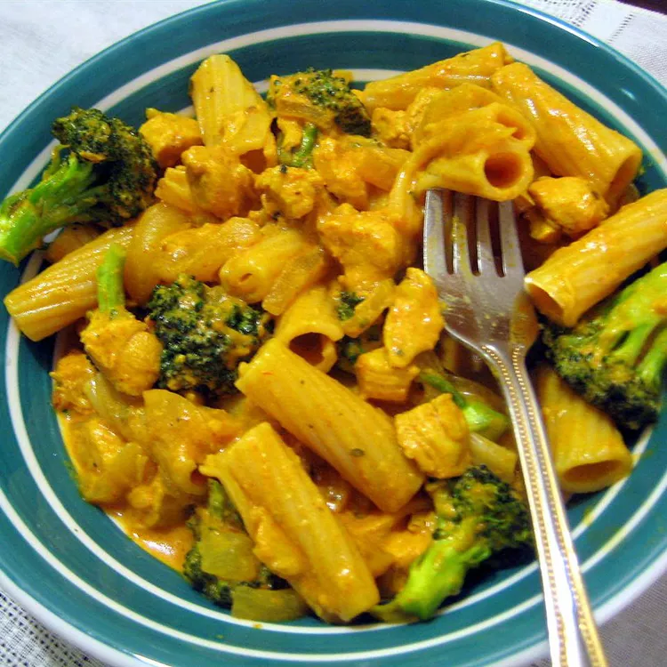

Curry Pasta

Description
This recipe adds a whole new dimension to the thousands of ways that spaghetti can be served!
This amazing dish is spicy, filling, and oh-so-tasty!
Ingredients
- ¼ cup chickpea flour (besan)
- 4 red bell peppers, seeded and diced
- 3 fresh curry leaves
- 1 pound cubed skinless, boneless chicken
- 1 tablespoon ginger garlic paste
- 1 teaspoon ground turmeric
- 2 teaspoons hot paprika
- ¼ cup water
- 1 (2 ounce) package coconut milk powder
- 1 cup water
- 1 (16 ounce) package spaghetti
- 3 green chile peppers, sliced into thin rings
- ½ cup chopped fresh cilantro
- 1 lemon, cut into thin slices
Steps
- Heat a small skillet over medium heat.
Add the chickpea flour and cook, stirring frequently, until the flour darkens slightly and smells fragrant, about five minutes.
Remove the pan from the heat and pour the toasted chickpea flour into a bowl to cool.
- Heat a nonstick skillet over medium-high heat.
Add the red bell peppers and curry leaves and cook for 2 minutes, stirring constantly.
Mix in the cubed chicken and cook, stirring frequently, until no longer pink, about 5 minutes.
Stir in the ginger-garlic paste and fry for 30 seconds.
- Combine the turmeric, cayenne pepper, and chickpea flour.
Sprinkle the spice mixture over the chicken mixture and cook, stirring constantly, for 2 minutes.
Pour in 1/4 cup of water to prevent the spices from sticking to the bottom of the pan.
Dissolve the coconut powder in 1 cup of water. Pour it over the chicken mixture and reduce the heat to low.
Stir the mixture occasionally while you prepare the pasta.
- Fill a large pot with well-salted water and bring to a rolling boil over high heat.
Once the water is boiling, stir in the spaghetti, and return to a boil.
Cook the pasta uncovered, stirring occasionally, until the pasta has cooked through but is still firm to the bite, about 12 minutes.
Drain well in a colander set in the sink.
- Transfer the hot spaghetti to a serving bowl and pour the chicken mixture over the pasta. Garnish with sliced green chilies, cilantro, and lemon slices.